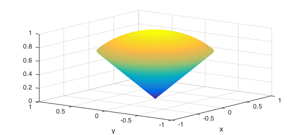
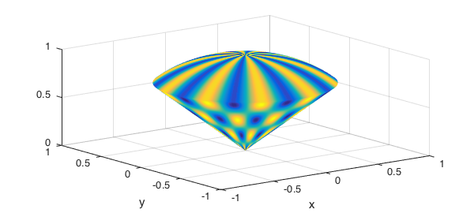
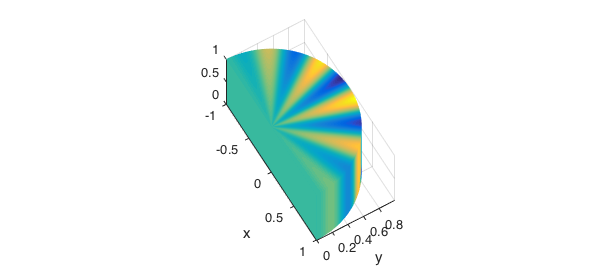
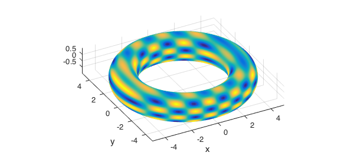
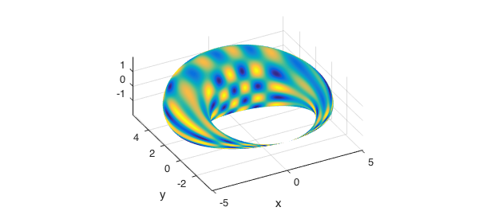
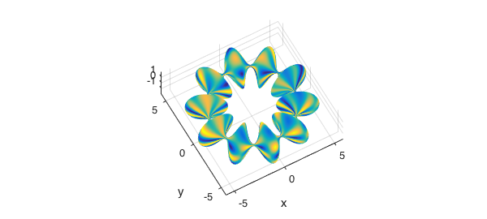

Transformations
In this example we use mappings to compute with functions defined on non-rectangular three dimensional volumes. The mapping variables must be defined on a rectangular domain. In other words, we will use the change of variables
$$ x = x(u,v,w), \ y = y(u,v,w), \ z = z(u,v,w), $$
where $u$, $v$, $w$ are defined as chebfun3 objects on a rectangular domain.
Triple integrals in spherical coordinates
Here we use spherical coordinates to compute the mass of a "ice-cream cone" region with variable density. The region is defined by
r = chebfun3(@(r,t,p) r, [0 1 0 2*pi pi/4 pi/2]); t = chebfun3(@(r,t,p) t, [0 1 0 2*pi pi/4 pi/2]); p = chebfun3(@(r,t,p) p, [0 1 0 2*pi pi/4 pi/2]); x = r.*cos(t).*cos(p); y = r.*sin(t).*cos(p); z = r.*sin(p);
We can plot the surface of this region using the plot command.
plot(x,y,z) view(-53,24)

We now define the density function and graph the surface of the solid colored by the density function.
density = sin(10*t).*cos(10*r)+1; plot(x,y,z,density)

The mass of the solid can be found by computing the triple integral in a rectangular region. The change of variables requires us to compute the determinant Jacobian of the transformation.
M = integral3(density.*abs(jacobian(x,y,z))); format long disp(M)
0.613434123007076
To show the accuracy of chebfun3 representations we now consider a simpler density function, for which the exact answer to the triple integral can easily be found.
disp(integral3(r.^2.*abs(jacobian(x,y,z)))) disp(pi*(2-sqrt(2))/5)
0.368060473804247 0.368060473804244
Triple integrals in cylindrical coordinates
In our next example we compute the center of mass of a sector of a cylinder with variable density.
r = chebfun3(@(r,t,z) r, [0 1 0 pi 0 1]); t = chebfun3(@(r,t,z) t, [0 1 0 pi 0 1]); z = chebfun3(@(r,t,z) z, [0 1 0 pi 0 1]); x = r.*cos(t); y = r.*sin(t); density = y.*sin(10*t)+1; plot(x,y,z,density) axis image, view(60,60) coord = [x; y; z]; jac = abs(jacobian(coord));

Mass:
M = integral3(density.*jac); disp(M)
1.570796326794894
Center of mass:
jac = abs(jacobian(x,y,z)); xc2 = integral3(x.*density.*jac)/M; yc2 = integral3(y.*density.*jac)/M; zc2 = integral3(z.*density.*jac)/M; disp([xc2,yc2,zc2])
0.000000000000000 0.424413181578388 0.500000000000000
Triple integrals over the torus and other regions
Here is an example were we compute a triple integral over the torus
r = chebfun3(@(r,t,p) r, [0 1 0 2*pi 0 2*pi]); t = chebfun3(@(r,t,p) t, [0 1 0 2*pi 0 2*pi]); p = chebfun3(@(r,t,p) p, [0 1 0 2*pi 0 2*pi]); x = (4+r.*cos(t)).*cos(p); y = (4+r.*cos(t)).*sin(p); z = r.*sin(t); f = sin(7*z).*sin(3*x);
plot(x,y,z,f) axis tight, axis image view(-28,31) disp(integral3(f.*abs(jacobian(x,y,z))))
-3.612086395056842e-23

In the next two examples we vary the radius of torus to generate other solid regions and the compute the triple integrals.
rr = r.*(1+sin(p)); x = (4+rr.*cos(t)).*cos(p); y = (4+rr.*cos(t)).*sin(p); z = rr.*sin(t); plot(x,y,z,f) axis tight, axis image view(-28,31) disp(integral3(f.*abs(jacobian(x,y,z))))
4.172576876884635e-24

Here is the other region.
rr = r.*(1+0.9*sin(10*p)); x = (4+rr.*cos(t)).*cos(p); y = (4+rr.*cos(t)).*sin(p); z = rr.*sin(t);
In this case we compute the volume of the region using triple integrals.
plot(x,y,z,f) axis tight, axis image view(-29,60) disp(integral3(abs(jacobian(x,y,z))))
1.109343534682443e+02
